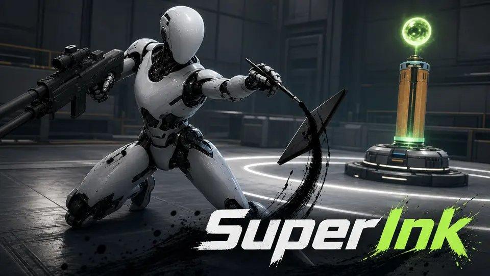
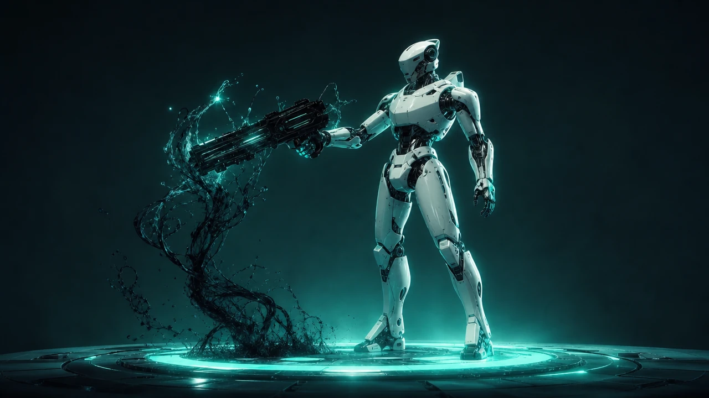
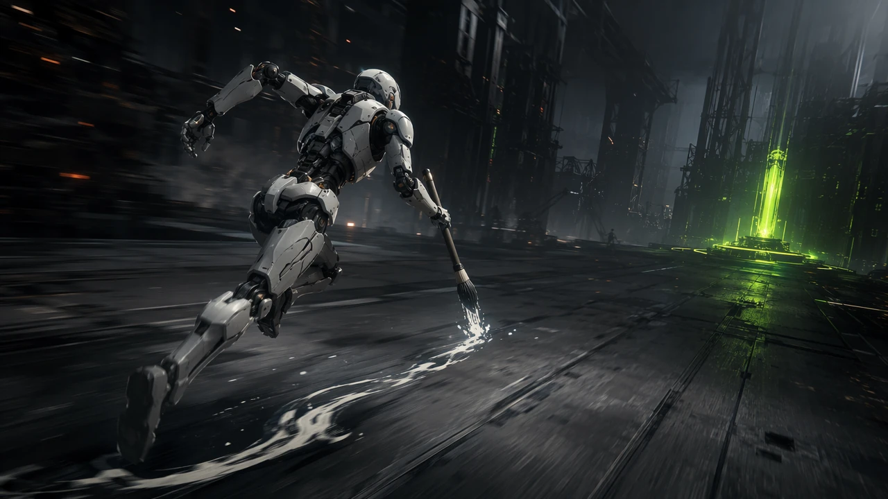
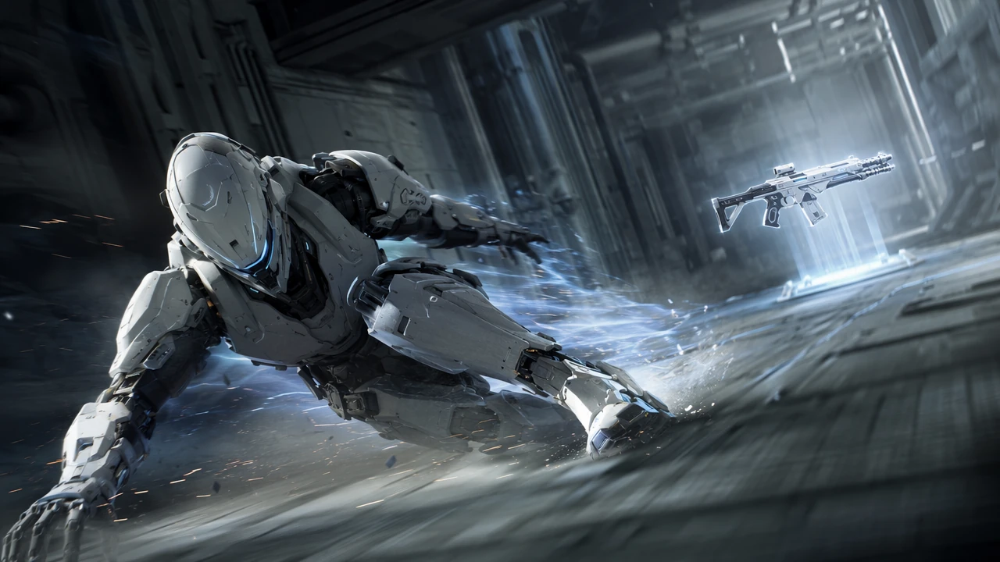
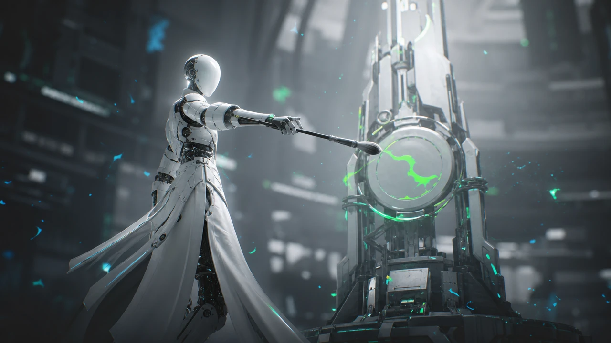

Player Authorship
Players create their own visual patterns instead of choosing only from predetermined weapon icons. Each pattern becomes a personal combat signature that can be practiced and refined.
Player input detected / move to create
SuperInk is a systemic FPS prototype where player-designed drawings become temporary combat objects.
Rather than only a tool for aiming.
Players design their own visual patterns, reproduce them under pressure, and watch the game translate their input into physical weapons.
I designed it. I drew it. I fought with it.
A successful drawing does not end at recognition. It creates a weapon that immediately returns the player to FPS combat, where positioning, ammunition management, trigger discipline, movement, teamwork, and tactical planning still determine the outcome.
When that self-created weapon eliminates an enemy, combat feedback amplifies the satisfaction of drawing it. The player experiences the consequence of something they personally brought into existence.
Every layer of play changes because the player made the mark.
Players create their own visual patterns instead of choosing only from predetermined weapon icons. Each pattern becomes a personal combat signature that can be practiced and refined.
Stroke structure, accuracy, and similarity influence the reliability and formation quality of each generated weapon.
Generated weapons are powerful but temporary. Ink, ammunition, and durability force the player to decide when creation is worth the cost.
Creation expands the player’s options, but never replaces positioning, aim, ammunition control, trigger discipline, timing, coordination, or strategy.

Trace the reference pattern. The system captures your strokes, normalizes the shape, and converts geometric similarity into weapon behavior.
Draw the reference signal, then analyze the captured geometry.
Simplified browser demonstration of the recognition pipeline used in SuperInk.
Scroll through the combat sequence.

Ink transforms a player-authored pattern into a temporary physical weapon. Drawing quality influences its stability, ammunition, and reliability—making mouse control visible through gameplay.

After generating a weapon, the player must read the battlefield, manage distance, and decide when to push toward the objective.

Movement, aim, ammunition control, trigger discipline, and timing determine whether a self-created weapon can become a real combat advantage.

Instead of passively standing inside a capture zone, players expose themselves to draw directly onto the objective—turning positioning, protection, and teamwork into visible territorial control.
The drawing is theirs. The decision is theirs. The consequences are theirs.
Yimo ZhengYimo Zheng
Gameplay + Technical Designer
I study Computer Science at UW–Madison and build independent games. My work connects player input, readable feedback, and the rules that make a mechanic worth exploring.
In SuperInk, drawing recognition, ink cost, temporary weapons, and depletion form one combat loop. I designed and implemented the recognition, ink economy, and weapon generation around Akila’s FPS foundation.
In One More Relic, I built a six-state supernatural encounter loop and mouse-directed lighting with wall occlusion. Movement and visibility shape discovery, while a two-item carry limit gives each find a cost.
After mentor scope reviews, I cut SuperInk’s multiplayer and full character roster to focus the vertical slice. I checked recognition with eight Unity EditMode cases and verified gameplay through manual playtests.
Software Engineer Intern
Built a sentiment dashboard covering 55 stocks across 11 sectors. Added authentication and SQL indexing, then split the prototype into three services plus a gateway with Docker Compose for local demos.
Game Planning Track · Certificate completed
Studied production workflow, systems, combat, and numerical design. For my independent capstone, I broke down Zenless Zone Zero’s character stats, combat rules, and progression to examine how different builds create team roles.
I make games to leave something worth remembering.
zhengyimo882@gmail.com